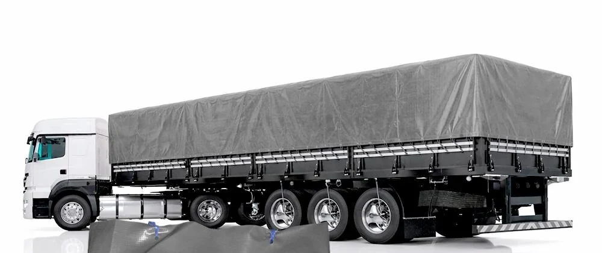
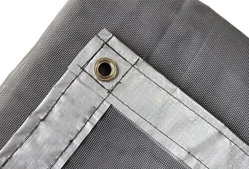

Lona CK300 — polietileno
Lona leve de PE para cobertura e proteção de cargas. Consulte medidas, cor e acabamento.
Lonas para caminhões, telas de proteção de cargas, cordas e cintas de amarração — portfólio B2B para transporte rodoviário e distribuição.
Lona leve de PE para cobertura e proteção de cargas. Consulte medidas, cor e acabamento.

Lona de PVC para coberturas rodoviárias, carretinhas e caminhonetes; especificações sob consulta.

Alternativas em PVC para transporte e proteção de cargas. A versão CK500 depende de confirmação técnica e comercial.

Encerados de algodão, inclusive fio 08, para proteção de cargas; consulte acabamento e dimensões.

Tela preta para contenção de materiais como recicláveis, grãos e sucata; consultar malha e medidas.

Tela industrial cinza para proteção e contenção de cargas; verificar gramatura e aplicação.

Cordas de poliéster e outras fibras, em diferentes diâmetros e apresentações.

Cintas de amarração, modelos com catraca e gancho e acessórios de contenção.
Fotografias reais de produtos, reproduzidas do catálogo original. Não divulgamos o fornecedor nem presumimos disponibilidade ou representação contratual.
Informe tipo de produto, material, medidas, espessura ou gramatura, cor, acabamentos, acessórios, quantidade e destino. Trabalhamos com especificações a confirmar antes de qualquer proposta.
Cintas para amarração não devem ser apresentadas como cintas de elevação. Verifique os limites e as normas aplicáveis ao modelo.